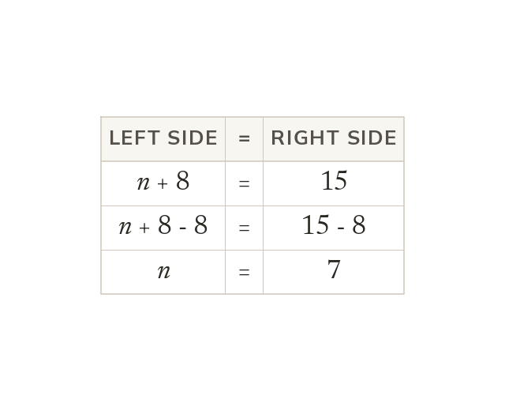

Balance and inverse
Solving finds the value that makes both sides equal. Do the same to each side to keep the balance. The inverse operation undoes what was done to the unknown.
Solving an equation means finding the value that makes both sides equal, keeping the balance by doing the same thing to each side. Applying the inverse operation undoes what was done to the unknown.